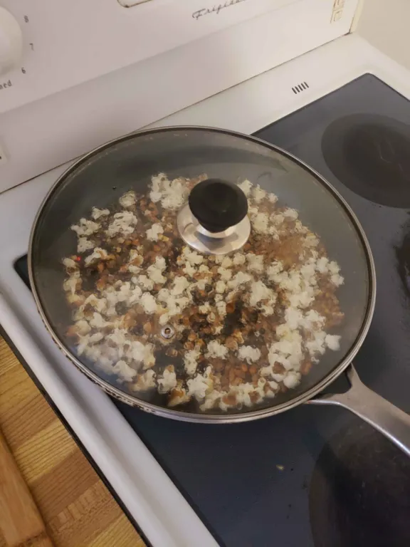

Kernel Management
Captain's log, stardate 2026.311.
Tonight's mission was dinner. I present the evidence below: a pan of kernels on the stove, lid on, heat applied, the situation developing. Some kernels popped. Some sat at the bottom and burned. A few never got the memo at all.

I stood there shaking the pan so nothing would scorch, and realised I was running a scheduler. So here is the entry I was always going to write. Kernel management.
The joke, and then the real thing
A pan of popcorn is a shockingly good model of an operating system. The heat is the CPU: one scarce resource everything wants. Each kernel is a process. Shake the pan and you spread the attention around so every kernel gets its turn at the hot metal. Stop shaking and the ones at the bottom get all the heat and burn, while the ones on top never cook. That failure has a name in both kitchens and computers: starvation. And the lid is the boundary that keeps the chaos contained and pointed where it should go.
That is the whole idea of a kernel. Not the popcorn kind. The one at the centre of every operating system.
What the kernel actually manages
The kernel is the one program that runs with full privileges and stands between every other program and the hardware. Everything else has to ask it for things. It has a few big jobs.
- The CPU. One core runs one thing at a time, but the machine has hundreds of processes that all want to run. The scheduler decides who runs next and for how long, a slice of time called a quantum, then performs a context switch to the next one. Do this fast enough and it looks like everything runs at once. Do it unfairly and something starves, exactly like the kernel at the bottom of the pan.
- Memory. Every process is told it has the whole machine to itself. That illusion is virtual memory, and the kernel maintains it with page tables that map each process's pretend addresses to real ones. Memory is handed out in pages, and a page is only loaded when it is first touched. Run out of real memory and the kernel starts writing pages to disk, and in the worst case it picks a process and kills it to save the rest.
- The hardware. A normal program is not allowed to touch the disk or the network directly. It makes a system call, which traps into the kernel and asks it to do the dangerous part. That wall, between the unprivileged program and the privileged kernel, is the entire security model of the machine.
Managing the kernel itself
There is a second meaning. You also manage the kernel as a thing you own. You load modules into it to add a driver without rebooting. You turn tunables to change how it behaves under load. You pick an architecture: Linux puts everything in one privileged lump, which is fast but means one bad bug can take down the whole system. That bug has the best name in computing. A kernel panic.
The one sentence
The kernel is the resource manager. It decides who gets the CPU, who gets memory, and who is allowed to touch the hardware, and it holds the wall between your program and everything else.
Captain's log, supplemental. The popcorn was, in the end, mostly fine. A few casualties at the bottom of the pan, lost to a scheduler that got distracted writing a log entry. There is a lesson in that somewhere about not starving your background tasks. Next on the chart: actually read the Linux scheduler's source instead of describing it from the deck.
End log.